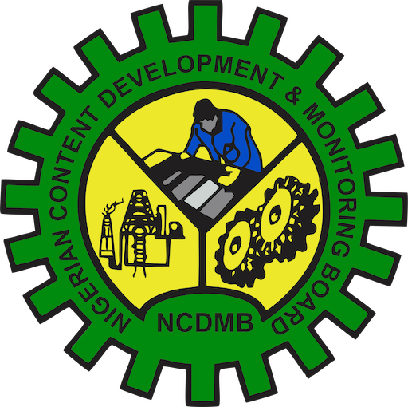

Capacity Development
Targeted interventions in human capital, infrastructure, manufactured materials, and local supplier growth.
Promoting Research to Commercialization (R2C). Building Nigeria's next generation of energy innovators.
The Tech Innovation Challenge (TIC) is a Maiden initiative of the Nigerian Content Development & Monitoring Board (NCDMB) aimed at strengthening Nigeria's innovation ecosystem by supporting technology-driven solutions that advance the oil, gas, and energy sectors.
TIC provides a platform for innovators, researchers, and entrepreneurs to showcase their ideas, receive expert mentorship, and gain access to funding and industry networks, from lab to market.
Driving Local Content, Building the Nation
The Nigerian Content Development & Monitoring Board was established in 2010 by the Nigerian Oil and Gas Industry Content Development (NOGICD) Act to guide, monitor, coordinate, and implement local content development across Nigeria's oil and gas industry.
From its headquarters at the Nigerian Content Tower in Yenagoa, NCDMB deepens indigenous capability, enforces Nigerian Content compliance, and advances research, capacity building, and industry partnerships that industrialise the sector and its linkages.
Visit ncdmb.gov.ng
Targeted interventions in human capital, infrastructure, manufactured materials, and local supplier growth.
Studies, workshops, and programmes that advance Nigerian Content and in-country innovation.
Oversight of Nigerian Content plans, project certification, and industry utilisation of local goods and services.
Stewardship of the Nigerian Content Development Fund and systems that strengthen indigenous participation.
Move innovative research into usable, industry-ready solutions.
Connect innovators with energy-sector stakeholders and networks.
Open pathways to scale high-potential indigenous solutions.
Equip ventures for market launch, growth, and commercialization.

Entrepreneurship & Innovation Centre Limited (EICL) is an ISO 9001:2015 certified Human Capital Development and Management Consultancy firm. We drive economic empowerment, enterprise growth, and the creation of sustainable jobs through innovation, technology, and strategic partnerships.
EICL was the Facilitator of the Tech Innovation Workshop and the Implementing Partner and Facilitator for the maiden edition of the NCDMB Tech-Innovation Challenge (TIC), driving indigenous innovation and startup growth in the oil and gas sector.

Managing Partner/CEO
Engr. Chinwah is a seasoned Techpreneur, Sustainable Development Expert, and certified Digital Skills for Entrepreneurs trainer with over 30 years of cross-sector experience.
He has 15 years of technical experience in Oil & Gas operations with TotalEnergies, and another 15 years leading business development, incubation, and venture creation across Nigeria.
As a COREN-registered Engineer and distinguished member of the Nigerian Society of Engineers, he currently serves as Chairman, Oil and Gas Trainers Association of Nigeria, Port Harcourt Zone. He is also a certified Digital Skills trainer and Human Capital Development specialist.
Engr. Chinwah holds a B.Eng from Federal University of Technology Owerri (FUTO) and an MBA in Finance from University of Port Harcourt (UniPort) Business School. He is also an alumnus of the MIT Entrepreneurship Program and the Oxford Saïd Venture Creation Program.
He provides strategic leadership to EICL’s work in enterprise development, innovation, and creating sustainable jobs.
ISO 9001:2015 · OGTAN — Port Harcourt Zone Certified · Certiport Authorized Testing Centre — Pearson VUE · Startup Science USA Partner · GIZ/DTC Innovation Support Organization · FG 3MTT Applied Learning Centre
See the programme structure, timeline, and competitors for the Maiden Edition.